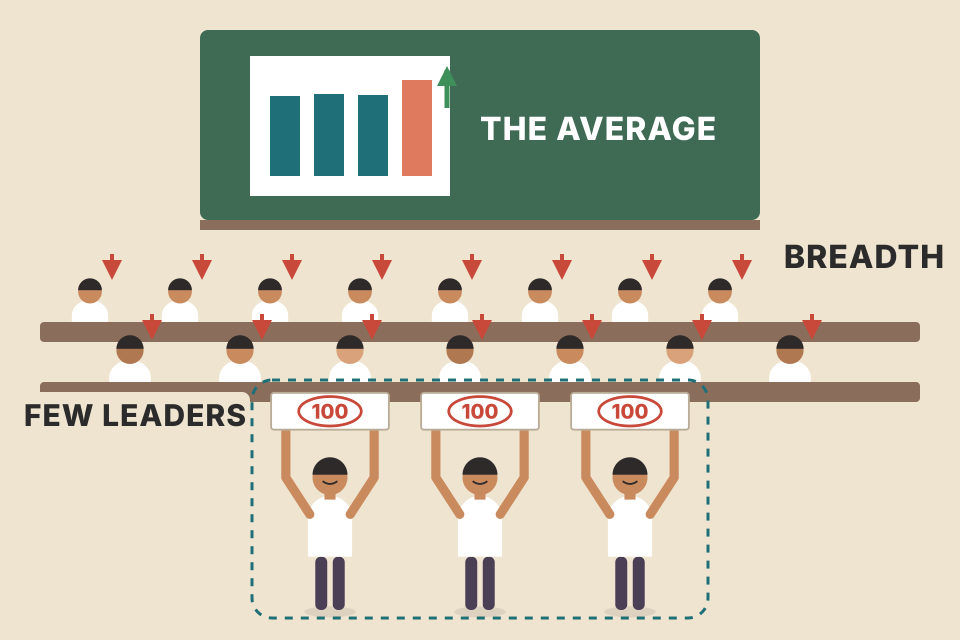
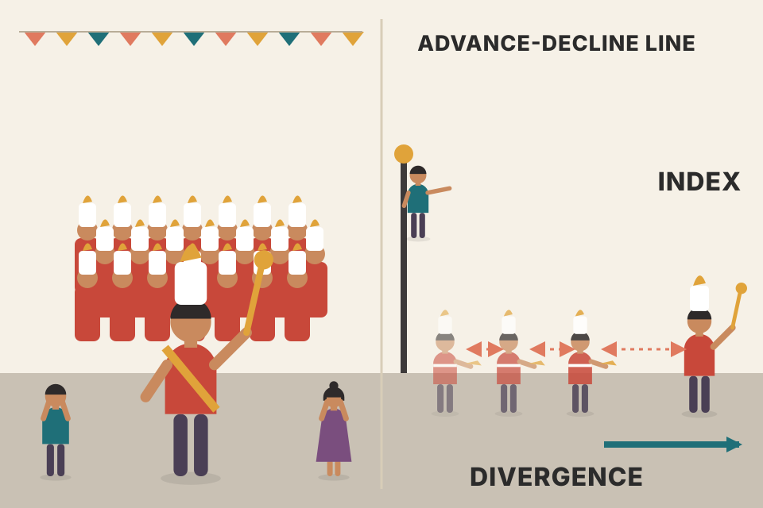
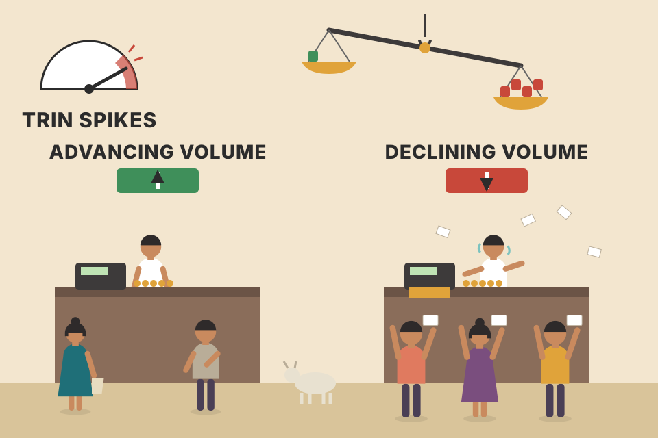
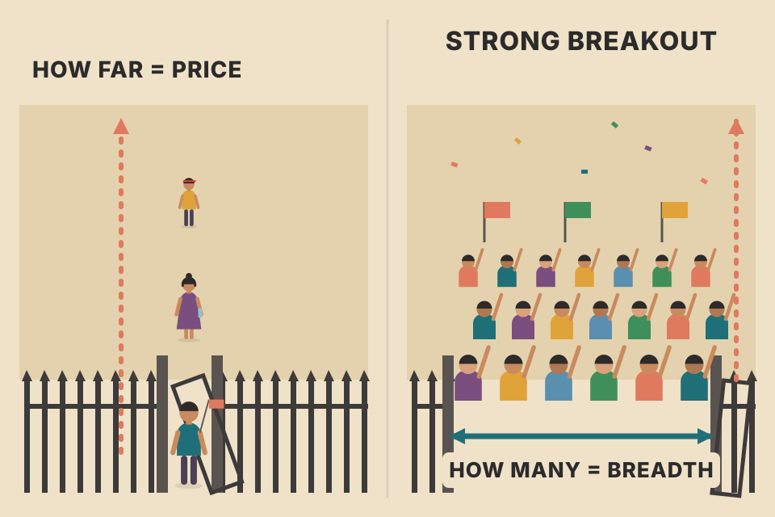

An index like the Dow can rise while most stocks fall. This chapter is about the tools that count what the whole market is doing: advancing vs declining stocks, new highs vs new lows, and up vs down volume. Most charts below are built live from one simulated market of 3,500 stocks, so you can see each indicator being computed from the stocks underneath it; sections 07, 14 and 17–18 use their own small simulations, labelled as such. All data is simulated, not real.
Every day the exchange produces three pairs of raw counts. Each indicator in this chapter is one way of turning a pair into a line, and every line is used the same way: compare it with the popular averages and ask whether they agree.
3,500 stocks. The 30 biggest are the "generals" (about 40% of total market value); the rest are the "troops". The story is fixed, the noise changes when you roll: A a broad rally (days 0–300), B a narrowing rally in which the generals keep climbing while the typical stock slips (300–465), C a sell-off (465–562), D a sharp breadth thrust off the low and a broad recovery (562–750). A stock counts as unchanged if it moved less than 0.25%. Volume rises on days a stock moves a lot. These are design choices to make the ideas visible; nothing here is real market evidence.
Chapter 17 described the top-down approach: first judge the health of the whole market, then work down to sectors and industry groups, and only then pick individual stocks. The goal is the best stocks in the best groups, while the overall market is technically healthy. Sectors and stocks can be studied with the tools from the rest of the book (chart patterns, volume, trendlines, moving averages, oscillators), and those tools also work on the big market averages.
But there is a separate family of indicators whose only job is to judge the health of the whole market by measuring its breadth: how many stocks are taking part. They are built from three pairs of numbers: advancing vs declining issues, new highs vs new lows, and up volume vs down volume.

A school's average exam score went up. Did the whole class improve, or did three top students score 100 while everyone else did worse? The average can't tell you. Counting how many students improved can. Breadth indicators count.
The top-left 30 squares (outlined) are the generals. They carry about 40% of the market value, so a cap-weighted index mostly follows them. The other 3,470 squares are the troops. Every breadth number in this chapter is just a count of colours on a grid like this one, taken every day. Step through the narrowing phase: the generals' index often rises on days when most squares are red.
backtest_results_summary.md: a 200-day market filter (Nifty above its 200-day average) was "the one consistent winner" (+0.26 Sharpe, −8 points drawdown out-of-sample). That filter asks the same question as breadth, "is the overall market healthy?", using only the index. Breadth asks it by counting stocks. Whether a breadth filter would add anything is an untested idea, not a result.The Wall Street Journal's Stock Market Data Bank (Section C, page 2) printed these numbers every day for the previous session, for the NYSE, the Nasdaq and the American Stock Exchange. Murphy uses one real NYSE day (a Monday) and works only with the NYSE. The calculator below starts with his day's numbers; change any of them.
| Reading | Value | What it says |
|---|
Murphy's reading of that day: the Dow gained 12.20 points, so "the market" was up. But 1,559 stocks fell and only 1,327 rose, and more volume went into falling stocks than rising ones. Breadth was negative even though the Dow closed higher. The rest was mixed: more stocks made new 52-week highs (78) than new lows (43), which is positive. The closing tick was −135, meaning 135 more stocks closed on a downtick than an uptick, a short-term negative. The closing Arms reading of .96 was mildly positive (explained in section 13). The point of all these internal readings is a truer picture of the market's health than the Dow alone gives.
1,327 + 1,559 + 546 = 3,432, the issues traded. The Arms Index recomputes exactly: (1,327 ÷ 1,559) ÷ (248,215 ÷ 279,557) = 0.851 ÷ 0.888 = 0.96. Why is it "positive" when declining volume was bigger? Rearrange the formula: TRIN = (volume per declining stock) ÷ (volume per advancing stock) = 179.3 ÷ 187.0. The average rising stock traded slightly more shares than the average falling stock. Also note the total volume (553,914) is more than advancing + declining volume (527,772); the difference is presumably the volume of unchanged stocks.
Another way to read breadth is to compare the averages themselves. On the same day, the Dow was the only major average that rose. TV news told investors the market was up, but every other measure fell, and the more stocks an average contained, the worse it did:
Murphy's message: the Dow gained, but the market as a whole lost ground as measured by the broader averages. He returns to this idea at the end of the chapter (section 19).
A newspaper reports "the army advanced today" because the generals moved their tent forward. Meanwhile most of the soldiers retreated. Which headline describes the army?
A cap-weighted average is a vote weighted by size. 30 giant stocks can outvote thousands of small ones. An average with more stocks (or an equal-weighted count) gives the small ones a voice, so it shows what the typical stock did. In the simulation such days turn up in every phase (one day of noise proves little), but they come noticeably more often in the narrowing phase; compare the two counts in the readout. A run of them is the warning the rest of the chapter teaches you to read.
The best-known breadth indicator, and very simple. Every day the NYSE produces a number of advancing stocks, declining stocks and unchanged stocks (published in The Wall Street Journal and Investor's Business Daily). The most common method: take advances − declines. More advances gives a positive number for the day, more declines a negative one. Add that number to yesterday's total. The running total is the AD line. It has a trend of its own, and the idea is to check that the AD line and the market averages trend the same way. Figure 18.1 shows the healthy case: the NYSE AD line and the Dow rising together. (The scan repeats this page three times, pdf p487, p488 and p489.)
A tug-of-war score kept all season. Each day you add (stocks pulling up − stocks pulling down). The total doesn't care how far any one stock moved, only which side it pulled.
The level of the AD line means nothing (it depends on the day you started adding); only its direction and its peaks and troughs matter. Because every stock counts once, a ₹50 crore company and a ₹5 lakh crore company have equal votes. That's what makes it the opposite of a cap-weighted index, and why comparing the two is informative.
The AD line answers one question: is the broad universe of about 3,500 NYSE stocks moving with the popular averages, which hold only 30 (Dow) or 500 (S&P 500) stocks? In the words of a Wall Street saying, are the "troops" keeping up with the "generals"? While the AD line rises with the Dow, breadth is good. The danger comes when they diverge: the Dow makes new highs and the AD line doesn't follow. Technicians then start to worry about bad market breadth, an AD divergence. Historically the AD line has peaked well ahead of the market averages, which is why it's watched so closely.

A marching band where the drum major keeps stepping forward while the rows behind him slow down and stop. From the front row of the audience the band still looks like it's advancing. From the side, you can see it's falling apart.
Hollow red triangles mark days when the generals' index made a new high for the look-back window but the AD line did not. In the narrowing phase, the generals' extra buying lifts the index while the typical stock drifts down, so net advances turn negative and the AD line rolls over months before the index peaks. The readout measures that lead on this roll.
order_flow.md: "Price makes a new high, CVD doesn't" means the push is weakening. Same idea, with order flow instead of stock counts.The daily AD line is best for short- to intermediate-term comparisons with the averages, and less useful when comparing over several years. A weekly AD line counts the stocks that advanced vs declined over the whole week (published in Barron's every weekend). It is considered more useful for trend comparisons that span several years. A negative divergence in the daily line can warn of short- to intermediate-term trouble; a similar divergence in the weekly line is needed to confirm that a more serious problem is developing.
Daily weigh-ins jump around with what you ate yesterday; the weekly weigh-in shows the real direction. If the daily scale says "up" one morning, wait for the weekly number before buying new clothes.
The weekly line asks a different question: did each stock end the week higher or lower? A stock can have three up days and two big down days and still count as a decliner for the week. Small daily wobbles cancel out, so the weekly line is calmer and its turns are more meaningful, but they come later.
The number of stocks traded on the NYSE has grown over the years, so some analysts think subtracting declines from advances gives too much weight to recent data. Many technicians prefer an advance/decline ratio: advances ÷ declines. Some also think the number of unchanged issues belongs in the calculation. Whichever way it's calculated, the AD line's use is always the same: measure the direction of the broad market and make sure it agrees with the narrower but popular averages. AD lines can also be built for the American Stock Exchange and the Nasdaq. Technicians also build overbought/oversold oscillators on the AD numbers to spot short- to intermediate-term extremes in breadth; one of the best known is the McClellan Oscillator (next section).
In this simulation the "mood" (the share of stocks rising) has the same randomness every year. With the difference, swings get bigger just because more stocks are listed, so recent years dominate a cumulative line. The ratio and the share-of-all-issues version stay on the same scale throughout. The third formula is one common way to include unchanged issues; Murphy names the idea but not a formula, so it's an example, not the book's.
Developed by Sherman McClellan. Take the daily NYSE net advances (advances − declines). Compute a 19-day exponential average (a 10% trend) and a 39-day exponential average (a 5% trend). The oscillator is the 19-day minus the 39-day. It swings around zero, with upper and lower extremes from +100 to −100. Above +100 the stock market is overbought; below −100 it is oversold. Crossings above and below zero are read as short- to intermediate-term buy and sell signals. Figure 18.2 plots it as a histogram and points to an extreme oversold reading in October 1997.
(Not in the book: the 2 ÷ (N + 1) weight rule is the standard EMA convention; the book gives only the pairs 19-day = 10% and 39-day = 5%.)
Two thermometers in the same room: one reacts in minutes, one in hours. When the quick one reads warmer than the slow one, the room is heating up. When the gap gets very large, the heating can't continue at that pace for long.
When breadth improves, the faster average rises before the slower one, so the gap turns positive; when breadth fades, it turns negative. A reading beyond ±100 means the recent run of net advances is unusually lopsided. In this simulation the deepest oversold readings come in the sell-off and the biggest overbought readings in the breadth thrust right after the low. (My note, not the book's: the ±100 levels suit a list of roughly 3,500 stocks; with a much bigger or smaller list the same mood gives bigger or smaller numbers, see section 07.)
The Summation Index is a longer-range version of the oscillator: a running total of each day's positive or negative McClellan Oscillator readings. The oscillator is for short- to intermediate-term trading; the Summation Index gives a longer view of breadth and is used to spot major turning points. Figure 18.3: it is used for major trend analysis, crossings below zero are negative, and its February 1998 signal was positive.
The oscillator is today's weather; the Summation Index is the season. A few cold days don't end summer, but once the running total of "colder than usual" turns negative, the season has changed.
(My maths, not the book's.) Adding up the oscillator undoes the daily step: apart from a small constant, the Summation Index equals the 19-day EMA of the AD line minus its 39-day EMA. So it is the McClellan construction applied to the AD line itself. It does not climb with the AD line; it swings around zero in long waves, turning positive when the AD line's fast average rises above its slow one. It crosses zero far less often than the oscillator, so each crossing marks a bigger shift. Compare the number of crossings in the readout with section 08's.
The press also publishes the number of stocks hitting new 52-week highs and new 52-week lows, daily and weekly. One way to show them is two separate lines. The daily numbers can be erratic, so moving averages (usually 10 days) are used (Figure 18.4). The rules:
Figure 18.4: during October 1997 the two 10-day lines almost crossed, then went back to their bullish alignment. The other way to use the numbers is to plot the difference (next section).
A school sports day: count how many kids set a personal best and how many had their worst-ever time. If personal bests are thinning out while the headline winner still breaks records, the school's form is fading.
A 52-week high needs a stock's whole past year to be below today, so the count of new highs shrinks as soon as most stocks stop climbing, even while a few leaders keep rising. Watch the narrowing phase: the new-highs line sags long before the generals' index tops. In the sell-off, new lows explode; their extreme sits near the low.
Plot the difference: new highs − new lows. Its advantage is that it can be compared directly with a major average, just like an AD line (Figure 18.5 against the NYSE Composite; a rising line is positive; note the sharp drop in October 1997). Its trend can be charted and used to spot divergences: a new high in the Dow that isn't matched by a new high in the high-low line can be a sign of weakness in the broad market. Trendlines and moving averages can be applied to the line itself, but its main value is confirming or diverging from the major stock trends and warning early of trend changes. Dr. Alexander Elder (Trading for a Living, Wiley) calls it "probably the best leading indicator of the stock market". Elder suggests plotting it as a histogram around a zero line, which makes divergences easier to see; crossings above and below zero reflect bullish and bearish shifts in market psychology.
The hollow triangles mark days when the generals' index made a 60-day high but the (smoothed) high-low line did not make its own 60-day high. Above zero more stocks are breaking out than breaking down; below zero the reverse. A zero crossing is the moment the crowd's balance flips.
The third and last breadth data set. The NYSE also reports the volume traded in advancing stocks and in declining stocks (in the financial press the next day). Compare upside volume with downside volume to see which side dominates (Figure 18.6 uses 10-day averages of each). Show them as two lines, like new highs and lows, or as one line of the difference; the reading is the same either way. Upside volume dominant: the market is strong. Downside volume greater: the market is weak. Combining the advancing/declining counts with the advancing/declining volume is what Richard Arms did when he created the Arms Index.
Counting stocks is counting hands raised. Volume is counting how much money each hand is holding. A rally where the big money sits on the selling side is weaker than the hand count suggests.
Named after its creator Richard Arms. The numerator is advancing issues ÷ declining issues; the denominator is advancing volume ÷ declining volume. It asks whether there is more volume in rising or in falling stocks.

A shop's cash register. TRIN compares how busy the average "falling" stock's till is with the average "rising" stock's till. When panicked sellers crowd the falling stocks, TRIN jumps; that panic often comes near the end of a fall.
Rearranged, TRIN = (down volume ÷ declining issues) ÷ (up volume ÷ advancing issues): volume per falling stock over volume per rising stock. On a big down day the falling stocks are the ones moving hard and trading heavily, so TRIN rises; on a big up day it falls. That's why it moves opposite to the index (the readout shows the correlation on this roll). The red dots mark the highest daily readings; check where they sit relative to the sell-off low.
For intraday trading the Arms Index (TRIN) can be paired with the TICK: the number of stocks trading on an uptick minus the number trading on a downtick. The TICK is a minute-by-minute version of the daily advance-decline line, used for the same purpose. During the day, a rising TICK with a falling TRIN is positive; a falling TICK with a rising TRIN is negative. The Arms Index can also be used for longer-range analysis (next two sections).
The TICK is a snapshot of the last trade of each stock, so it reacts within a minute. The intraday TRIN counts stocks up or down versus the prior close, with their volume accumulated since the open, so it moves more slowly. When both agree (TICK climbing, TRIN falling) buying is broad and has volume behind it. The readout compares the last 30 minutes of each.
backtest_results_summary.md: no intraday strategy passed your tests; 5-min ORB long + short is only a lead. Whether TICK/TRIN as a filter would help it is an open question, not something tested.The Arms Index is quoted all day and has some short-term forecasting value, but most traders use a 10-day moving average. According to Arms, a 10-day average above 1.20 is oversold and below .70 is overbought, though these levels can shift with the overall trend of the market. Arms also likes Fibonacci numbers: he suggests a 21-day Arms Index as well as the 10-day, and uses 21-day and 55-day moving-average crossovers of the Arms Index for good intermediate-term trades. For more, Murphy recommends The Arms Index (TRIN) by Richard W. Arms, Jr.
One day of panic tells you little. Ten days in a row with more volume in falling stocks than rising ones is an exhausted crowd; that's the oversold zone.
In this simulation the 10-day average spends far more time above 1.20 than below .70. Two reasons (my reasoning, not the book's): the simulated market has a sharp sell-off but no equally violent buying mania, and averaging a ratio leans upward (a 0.5 day and a 2.0 day average to 1.25, not 1.0). That's one reason fixed thresholds can drift; drag them and see how the counts change. For the 21/55 crossovers, remember TRIN is inverted: the 21-day falling below the 55-day means volume is shifting toward rising stocks, which is the bullish cross. That direction is our reading; the book only says crossovers give intermediate-term trades.
In the normal 10-day Arms Index, each day's closing value is computed from the four inputs and then that final value is smoothed with a 10-day moving average. In the Open version, each of the four components is averaged separately over 10 days, and the Arms Index is then calculated from those four averages. Many analysts prefer Open Arms. Other lengths, like 21 and 55 days, can be used too. Figure 18.8: the 10-day Open Arms gives a much smoother look but still trends opposite to the market, and a crossing of its own 10-day moving average often signals turning points.
Your average speed on a trip. Averaging each hour's speed treats a 10-minute crawl and a 3-hour highway stretch as equal. Total distance ÷ total time gives the honest answer. Open Arms is total-over-total.
The normal version averages ratios, so one panic day with a reading of 3 can dominate ten days. Open Arms sums the shares and the stocks first, so a big day counts in proportion to its size and the ratio-skew from section 15 mostly disappears. The readout compares how much each version moves day to day on this roll and where each sits on average. Be honest about the size: on this simulation the two 10-day versions are close (Open sits a few hundredths lower and moves only slightly less per day). Both are far smoother than the raw daily readings of section 13; the caption's point about a much smoother look is easiest to see against those. (My reading of the simulation, not the book's.)
Beyond his index, Arms worked on several ways to read price and volume together. One of them became a chart type of its own: Equivolume. On a normal bar chart the range sits on the price bar and the volume is a separate bar at the bottom, so you have to look at two places at once. On an Equivolume chart each day is a rectangle: its height is the day's trading range and its width is the day's volume. Heavy-volume days make wide boxes; light days make narrow ones. Figure 18.9 (Intel): the rectangles started to widen during Intel's last sell-off, a negative sign.

A crowd walking through a gate. Height is how far they moved; width is how many people pushed through. A breakout through a narrow gate with three people isn't the same as one with a stampede.
On Equivolume the horizontal axis is cumulative volume, not time. Busy periods stretch out; quiet ones shrink. In this simulated stock the base is narrow, the breakout box is wide, rallies are wider than pullbacks, and the boxes swell again in the final sell-off. Switch to the ordinary chart and you need two panels to see the same thing.
Candlesticks were explained by Greg Morris in Chapter 12. In a 1990 article in Technical Analysis of Stocks and Commodities ("East Meets West: CandlePower Charting"), Morris proposed combining candlesticks with Arms' Equivolume: the candle's width is set by volume, so the bigger the volume, the wider the candle. He called it CandlePower and argued it gives information at least as good as either Equivolume or candlesticks, and is as visually appealing as either. It was offered in the Metastock charting software (Equis International; the book prints the company's contact details), later renamed Candlevolume. Figure 18.10 shows Intel as a CandlePower chart.
It's the same stock as section 17. A candle adds what Equivolume lacks: the open and close (hollow = close above open, filled = close below open). A wide, filled candle is a heavy-volume down day; a wide hollow candle out of a narrow base is the breakout with volume behind it.
Back to the idea from section 03. The main averages are the Dow Industrials, the S&P 500, the New York Stock Exchange Index, the Nasdaq Composite and the Russell 2000, and each measures a slightly different part of the market:
The most important divergences involve the Nasdaq and the Russell 2000; both should be trending up along with the Dow and the S&P 500 if the market is truly healthy. Relative strength helps: a Nasdaq ÷ S&P 500 ratio shows whether technology stocks are leading or lagging; it's usually better for the market when they lead and the ratio rises (Figure 18.11). A Russell 2000 vs S&P 500 comparison shows whether the "troops" are following the "generals"; when small stocks show poor relative strength or lag too far behind the large ones, it often warns that breadth is weakening (Figure 18.12 overlays the Russell 2000 and the Dow; it's usually better when both rise together).
The five simulated averages are built from the same 3,500 stocks: the 30 largest (Dow-like), the 500 largest weighted by size (S&P-like), all 3,500 weighted by size (NYSE-like), the about 22% of stocks tagged "tech" weighted by size (Nasdaq-like), and the 2,000 smallest equally weighted (Russell-like). In the narrowing phase the four size-based averages (Dow-, S&P-, NYSE- and Russell-like) fan out in the order Murphy's rule predicts: the fewer and bigger the stocks, the better the average looks. The Nasdaq-like line follows the simulated tech factor instead, so it need not land last as the real Nasdaq did on Murphy's sample day. The readout checks the breakout-confirmation rule: of the Dow-like average's new highs, how many came with new highs in both the S&P-like and NYSE-like averages.
backtest_results_summary.md): relative strength again, used for picking stocks rather than reading breadth.Dow Theory is another example of comparing two averages: in Chapter 2, a Dow Theory buy signal needs both the Dow Industrials and the Dow Transports at new highs, and a divergence between them is a caution signal. Breadth, confirmation and divergence come in many forms. Murphy's general rule: the greater the number of stock market averages trending in the same direction, the greater the chance that the trend continues. Also check that the advance-decline line, the new highs–new lows line and the upside-downside volume lines are trending in the same direction.
The Dow-like average is the reference. Six other lines are checked against it: three more averages (S&P-like, NYSE-like, Russell-like), the AD line, the 10-day NH−NL line and the 10-day up−down volume line. A line's trend is "up" if it is higher than it was N days ago, "down" if lower. The lower panel counts how many of the six point the same way as the Dow-like average (0–6). In the broad rally almost all agree. In the narrowing phase the count drops while the Dow-like average keeps rising: fewer lines confirm, which is the warning. The vertical line is the day you picked.
For the broad market, no: breadth was negative (more decliners and more declining volume). Only the 30-stock Dow was up (sections 02–03).
Each day add (advances − declines) to yesterday's total. Only its direction and peaks matter, not its level (section 04).
An AD divergence ("bad breadth"): the troops aren't following the generals. Historically the AD line has peaked well ahead of the averages (section 05).
A similar divergence on the weekly AD line (section 06).
19-day (10%) and 39-day (5%) exponential averages of NYSE net advances; oscillator = 19 − 39. Above +100 overbought, below −100 oversold; zero crossings are short- to intermediate-term signals (section 08).
A running total of the daily McClellan Oscillator readings. It's the long-range version, used for major turning points (section 09).
The 10-day average of new lows crossing above the 10-day average of new highs. Shrinking new highs or growing new lows is an earlier caution (section 10).
Above 1.0 means more volume per falling stock, a negative reading. But Murphy notes very high readings are read the contrary way: exceptionally high spikes usually come near market bottoms (section 13).
Positive. Falling TICK with rising TRIN is negative (section 14).
Above 1.20 oversold, below .70 overbought (levels can shift with the trend). A 21-day version, and 21/55-day moving-average crossovers for intermediate trades (section 15).
Normal: compute each day's ratio, then average the ratios. Open: average each of the four inputs over 10 days, then compute the ratio once (section 16).
A noticeably wider rectangle (heavy volume). In an uptrend up days should be wider than down days (section 17).
As one line it can be compared directly with a major average, like an AD line: a Dow high not matched by a high in the high-low line warns of weakness underneath. Elder draws it as a histogram around zero, which makes divergences easier to see; zero crossings mark bullish and bearish shifts in market psychology (section 11).
That the S&P 500 and the NYSE Composite break out too, or the move may lack staying power. The Nasdaq has the most stocks but is cap-weighted, so its biggest technology names dominate it; it measures the tech sector more than the broad market. The Russell 2000 is the truer small-stock gauge (section 19).
The more market averages trend the same way, the better the chance the trend continues, and the AD line, the new highs–new lows line and the up-down volume lines should be trending that way too (section 20).